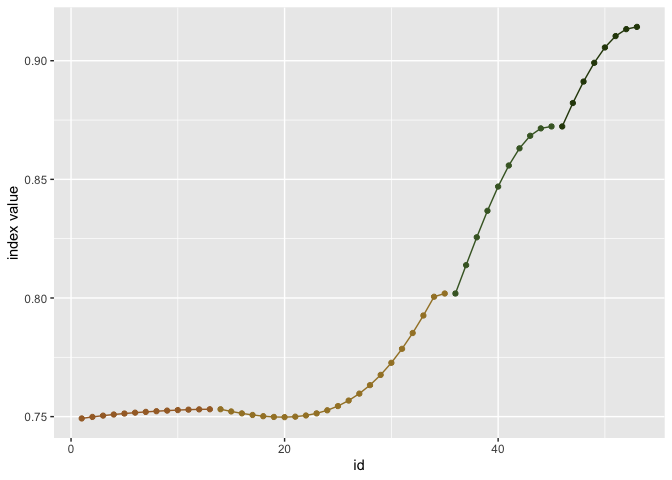
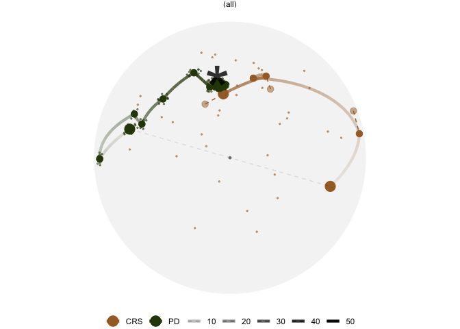

The ferrn package extracts key components in the data object collected by the guided tour optimisation, and produces diagnostic plots. An associated paper can be found at https://journal.r-project.org/archive/2021/RJ-2021-105/index.html.
Installation
You can install the development version of ferrn from GitHub with:
# install.packages("remotes")
remotes::install_github("huizezhang-sherry/ferrn")Usage
To extract the data object from a guided tour, assign the annimate_xx() function a name:
set.seed(123456)
holes_1d_better <- animate_dist(
ferrn::boa5,
tour_path = guided_tour(holes(), d = 1,
search_f = search_better),
rescale = FALSE)The above code will collect data from the 1D animation on boa5 dataset, a simulated data in the ferrn package.
The best projection basis found by the projection pursuit algorithm can be extracted via
library(ferrn)
library(dplyr)
holes_1d_better %>% get_best()
#> # A tibble: 1 × 8
#> basis index_val info method alpha tries loop id
#> <list> <dbl> <chr> <chr> <dbl> <dbl> <dbl> <int>
#> 1 <dbl [5 × 1]> 0.914 interpolation search_better NA 5 6 55
holes_1d_better %>% get_best() %>% pull(basis) %>% .[[1]]
#> [,1]
#> [1,] 0.005468276
#> [2,] 0.990167039
#> [3,] -0.054198426
#> [4,] 0.088415793
#> [5,] 0.093725721
holes_1d_better %>% get_best() %>% pull(index_val)
#> [1] 0.9136095Trace plot for viewing the optimisation progression with botanical palette:
holes_1d_better %>%
explore_trace_interp() +
scale_color_continuous_botanical()
Compare two algorithms via plotting the projection bases on the reduced PCA space:
bind_rows(holes_1d_geo, holes_1d_better) %>%
bind_theoretical(matrix(c(0, 1, 0, 0, 0), nrow = 5),
index = tourr::holes(), raw_data = boa5) %>%
explore_space_pca(group = method, details = TRUE) +
scale_color_discrete_botanical()
View the projection bases on its original 5-D space via tour animation:
bind_rows(holes_1d_geo, holes_1d_better) %>%
explore_space_tour(flip = TRUE, group = method,
palette = botanical_palettes$fern[c(1, 6)],
max_frames = 20,
point_size = 2, end_size = 5)